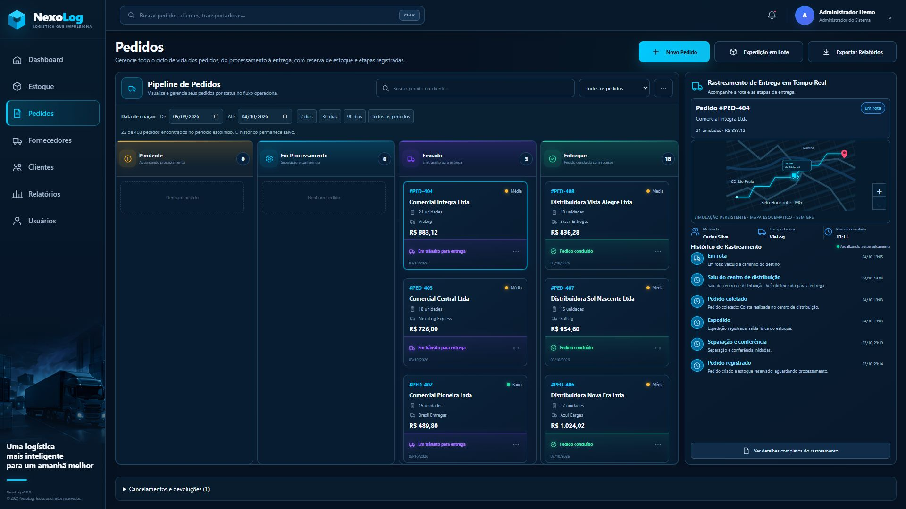
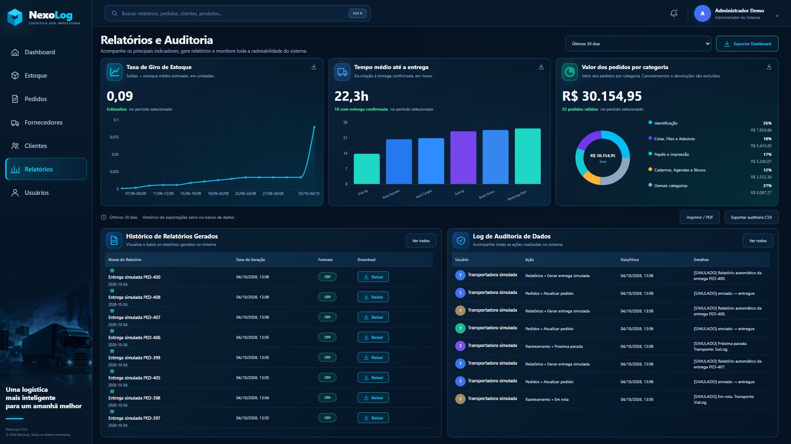

Estoque e produtos
Categoria, marca, variante e código de barras identificam cada item. O sistema controla saldos, reservas e movimentações.
Sua operação conectada.
Do cadastro do produto à entrega do pedido, o NexoLog conecta estoque, parceiros e indicadores. Cada operação mantém seus registros, permitindo acompanhar o negócio com clareza.
Demonstração local com dados fictícios. O executável abre o sistema no navegador, sem instalar Python ou Node.

Categoria, marca, variante e código de barras identificam cada item. O sistema controla saldos, reservas e movimentações.
Processamento, expedição e entrega em um fluxo visual, com filtro de período e regras para cancelamentos e devoluções.
Mapa esquemático com caminhão animado e eventos automáticos. A simulação registra as etapas e o resultado da entrega.
Cadastros, contatos, filtros e informações organizados em painéis de consulta e edição.
Indicadores por período, exportações CSV e histórico das ações realizadas no sistema.
Autenticação, perfis de usuário e dados salvos localmente, mantendo a operação entre as execuções.


Acesso público da demonstração: demo@nexolog.app / NexoLog@2026.
O rastreamento é uma simulação, sem GPS ou conexão com transportadoras reais. Os dados ficam em %LOCALAPPDATA%\NexoLog.